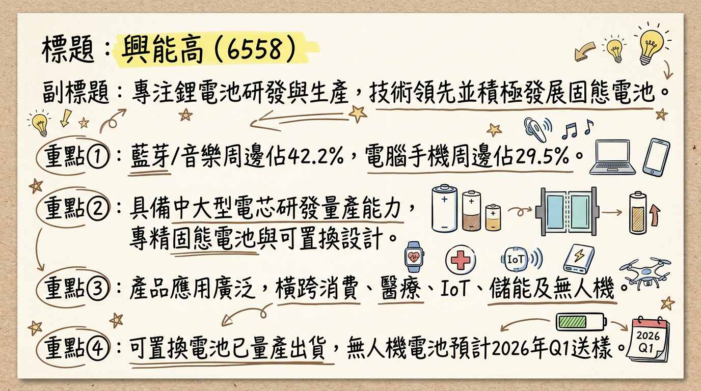
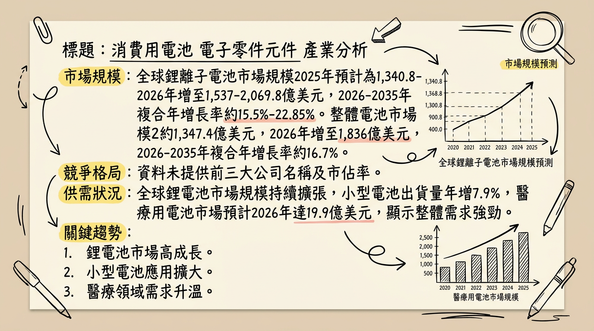
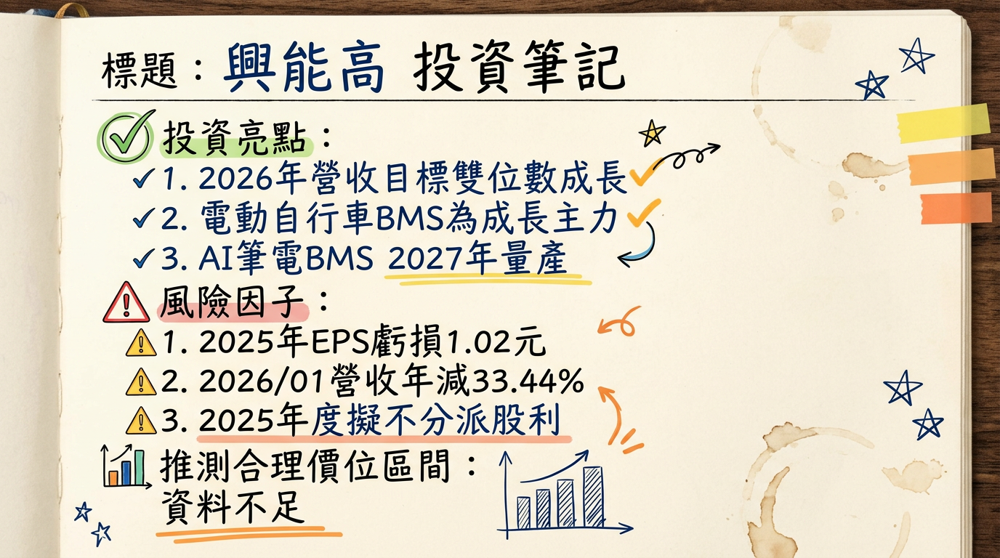

興能高積極轉型高毛利的非消費性產品，預計2026年醫療、儲能及無人機應用將貢獻顯著成長動能，儘管2025年由盈轉虧，管理層看好2026年營收表現將優於2025年，並透過資本支出與研發投入持續強化競爭力。
興能高科技（6558）主要從事鋰電池的生產與研發，其技術涵蓋LCO/NMC材料、寬溫與高安全性設計，並積極發展固態電池與新型態負極材料。公司具備中大型電芯的研發與量產能力，採用疊片工藝及可置換式設計，以符合歐美法規及產品設計需求。
核心產品應用範圍：公司在電池組裝方面，已在東南亞及台灣尋找合作廠商，目前處於產品開發與驗證階段，預計2026年能上線。電芯部分也已與相關業者尋求合作機會，以降低關稅對客戶的影響。
營收結構（截至2025年第三季）：| 產品應用 | 營收比重 | 備註 |
|---|---|---|
| 藍芽及音樂周邊 | 42.2% | 消費性產品，需求下滑 |
| 電腦手機周邊 | 29.5% | 消費性產品 |
| 醫療器件 | 15.0% | 非消費性產品，預計2026持續成長 |
| 穿戴裝置 | 4.2% | 消費性產品 |
| 物聯網 | 3.6% | 非消費性產品，客戶庫存去化接近尾聲 |
| 其他 | 5.5% | |
| 合計（應用） | 100.0% | 消費性應用75.9%，非消費性應用24.1% |
| 產品型態 | 營收比重 |
|---|---|
| 小方型電池 | 77.1% |
| 圓柱型電池 | 16.1% |
| 方形中大電池 | 4.7% |
| 其他 | 2.1% |
| 合計（型態） | 100.0% |
公司設定目標是將非消費性產品比重提升到40%以上。
| 月份 | 金額 (萬元) | 月增率 (MoM) | 年增率 (YoY) |
|---|---|---|---|
| 2026年1月 | 6,948.30 | -20.45% | -33.44% |
| 2025年12月 | 8,734.70 | 1.70% | -16.91% |
| 2025年11月 | 8,588.50 | 20.50% | -3.43% |
| 2025年10月 | 7,127.60 | -13.70% | -23.10% |
| 2025年9月 | 8,263.30 | -4.50% | -25.10% |
| 2025年8月 | 8,649.60 | -18.60% | -23.70% |
| 年度 | 全年營收 (億元) | 全年EPS (元) |
|---|---|---|
| 2024年 | (未提供具體數字，年減3%) | 0.10 |
| 2025年 | 10.7275 | -1.02 |
興能高2025年營運面臨挑戰，全年營收年減7.46%至10.73億元，並由2024年的獲利（EPS 0.1元）轉為虧損（EPS -1.02元）。虧損主因新台幣升值造成的匯損、中國大陸稅務調整（出口退稅率由13%調降至9%，影響毛利率約2.3個百分點）、藍牙及音樂周邊產品需求下滑，以及物聯網客戶庫存去化緩慢等多重因素衝擊。2026年1月營收續呈年減與月減，顯示營運底部可能尚未完全確立，但管理層預期2026年將優於2025年。
興能高總經理謝祥豪於2025年12月17日法說會中提出以下重點：
目前未找到2025-2026年來自至少三家券商的興能高具體目標價、評等及2025-2026年EPS預估數據。也未有重大調升/調降評等的公開資訊。
| 券商名稱 | 目標價 (新台幣) | 評等 | 日期 |
|---|---|---|---|
| N/A | 無資料 | 無資料 | 無資料 |
| N/A | 無資料 | 無資料 | 無資料 |
| N/A | 無資料 | 無資料 | 無資料 |
| 季度 | 毛利率 | 營業利益率 | 稅後淨利率 |
|---|---|---|---|
| 2024年第四季 | 18.72% | -2.97% | 1.08% |
| 2025年第一季 | 18.55% | -5.76% | -2.45% |
| 2025年第二季 | 20.05% | -2.26% | -16.10% |
| 2025年第三季 | 22.43% | -2.55% | 3.91% |
| 2025年第四季 | 13.17% | -13.72% | -22.04% |
興能高2024年毛利率年增至18.8%，顯示成本結構改善與產品組合優化，主要受惠於生產流程自動化提升、原料採購與製程優化及新品較佳毛利。然而，2025年公司營運遭遇逆風，毛利率波動劇烈，尤其在第四季大幅下滑至13.17%，營業利益率與稅後淨利率也大幅轉負。這主要歸因於新台幣升值造成的匯損、中國大陸出口退稅率調降（影響毛利率約2.3個百分點）、藍牙及音樂周邊產品需求下滑、以及物聯網客戶庫存去化較慢等多重因素的衝擊。消費型產品的競爭加劇也可能壓抑售價與毛利率。
存貨與營運：| 季度 | 存貨週轉次數 (次) | 存貨週轉天數 (天) | 應收帳款週轉次數 (次) | 應收帳款收現天數 (天) |
|---|---|---|---|---|
| 2024年第四季 | 1.11 | 80.99 | 0.81 | 111.30 |
| 2025年第一季 | 1.07 | 84.22 | 0.81 | 111.65 |
| 2025年第二季 | 1.17 | 77.12 | 0.92 | 98.02 |
| 2025年第三季 | 1.12 | 80.29 | 0.88 | 102.79 |
興能高近四季的存貨週轉天數大致維持在77至84天之間，應收帳款週轉天數則在98至112天之間。儘管2025年面臨物聯網客戶庫存去化較慢的問題，但從數據來看，並未顯示存貨出現明顯的異常堆積，整體營運週轉狀況仍在合理範圍內。
資本支出與未來計畫：2025年全球鋰電池產業已從供過於求走向供需平衡。展望2026年，預計鋰電池行業將持續供需緊張，尤其儲能領域需求爆發，使得全球鋰市場有望在2026年出現供不應求局面，並持續至2027年。小型電池（如100Ah電池）目前面臨嚴重短缺，訂單已排至2026年初，價格上漲逾20%。
產業的平均毛利率水準：未找到2024-2026年鋰電池產業的具體平均毛利率數據。但預計2026年鋰電上游材料（如鋰資源、碳酸鋰、電解液、鈷原料）供應全年偏緊，價格上行趨勢明顯，漲幅15%-30%，這些因素可能對毛利率產生正面影響。
興能高主要專注於利基型、客製化的小型鋰電池應用，與全球動力電池巨頭的直接競爭較少，更多是在特定細分市場與其他專業廠商競爭。
全球動力電池CR5市佔率預估 (2026年)：| 公司名稱 | 預估市佔率 |
|---|---|
| 寧德時代 | 35% |
| 比亞迪 | 15% |
| LG新能源 | 12% |
| 松下 | 8% |
| SK On | 7% |
| CR5合計 | 77% |
由於興能高在小型、利基型電池領域，其主要競爭對手多為各垂直細分市場的專業電池製造商，而非上述動力電池巨頭。以下為興能高在主要競爭要素上的特點：
| 競爭要素 | 興能高 (6558) |
|---|---|
| 專注領域 | 利基型、客製化小型鋰電池：藍牙耳機、穿戴裝置、AR/VR、醫療器件、物聯網、儲能系統（BBU）、無人機/無人載具。 |
| 技術特色 | 涵蓋LCO/NMC材料，寬溫與高安全性設計。積極發展固態電池與新型態負極材料。具備中大型電芯研發與量產能力，採用疊片工藝及可置換式設計。 |
| 產能 | 未提供具體產能數據。但2026年資本支出與研發支出將大幅成長1.5倍，將支撐全球化生產佈局（東南亞及台灣組裝合作廠2026年上線），並投入新品研發。小型電池市場面臨短缺，顯示專業廠商仍有市場空間。 |
| 客戶 | 消費型產品與非消費型產品客戶群多元。非消費性產品應用包括醫療器件（助聽器、胰島素注射產品）、物聯網、儲能系統（BBU）、無人機/無人載具，預計2026年將有更多可置換電池及無人機產品出貨，客戶基礎穩固且具成長潛力。 |
| 價格策略 | 專注高附加價值、客製化產品，具備較強的價格議價能力。儘管鋰電上游材料價格上行，但其利基市場定位有助於轉嫁成本。 |
| 主要競爭對手 | 醫療設備用鋰離子電池主要製造商 (2021-2026): EnerSys, Saft, Renata SA, Ultralife Corporation, EaglePicher Technologies, Panasonic Corporation, LG, Resonetics, Samsung 等。針對台灣同業如新普、順達等，則需個別財報對比。由於興能高在利基型市場，其競爭多在於技術壁壘、客製化能力和穩定供貨。 |
* 趨勢： 固態電池因高安全性、高能量密度與長循環壽命成為趨勢。半固態電池技術在新能源汽車、儲能、低空經濟和消費電子等領域加速進入商業化量產階段。
* 具體影響： 預計2026年，半固態電池將在eVTOL及消費電子等低成本敏感領域規模化量產。興能高積極發展固態電池技術，有助於抓住未來電池技術升級的機會。
* 趨勢： 為滿足電動車、儲能對續航與性能需求，硅基負極等新型負極材料和高壓實磷酸鐵鋰正極發展迅速。
* 具體影響： 高壓實磷酸鐵鋰正極有助於儲能電芯大型化。興能高在新型態負極材料的研發有助於提升其產品性能和市場競爭力。
* 趨勢： 歐盟法規推動可置換電池發展，並日益重視電池回收和循環經濟。
* 具體影響： 可置換電池設計提高產品使用彈性，符合環保趨勢。興能高已量產可置換電池，預計2026年將有更多產品出貨，為其帶來新的商業模式與市場機會。
對 興能高 而言的具體機會和威脅：* 技術領先： 積極發展固態電池與新型態負極材料，特別是半固態電池在消費電子和低空經濟的應用。
* 政策與市場需求： 台灣政府對國防自主（無人機/無人載具）和表後儲能的政策支持，以及全球AI數據中心對備援電池模組（BBU）需求的增長，均為興能高帶來具體市場機會。
* 供需緊張： 小型電池市場的供應緊張狀況，對具備穩定供貨能力的興能高可能有利，有助於爭取訂單和維持價格。
* 市場競爭： 儘管專注利基市場，仍面臨來自其他專業電池廠商或大型企業拓展細分市場的競爭。
* 技術快速迭代： 電池技術發展迅速，若研發投入不足或未能跟上趨勢，可能面臨被淘汰風險。
* 地緣政治與供應鏈風險： 鋰電池產業供應鏈全球化，地緣政治緊張、貿易壁壘、出口退稅政策調整等均可能影響營運（如2025年中國出口退稅率調降）。
相關投資題材的具體連結：以下為興能高近期主要利多/利空事件：
| 動能類別 | 具體描述 | 預計時間點/狀態 | 預估影響 |
|---|---|---|---|
| 新應用佈局 | 非消費性產品轉型： 營運重心轉向高毛利的醫療器件、儲能、無人機市場，目標將非消費性產品比重提升至40%以上。積極佈局BMS、5KWh BBU、PCS功率調節系統及固態電池技術。 | 持續進行中 | 改善產品組合，提升整體毛利率及獲利能力，分散消費性產品市場風險。受益於AI伺服器對BBU備援電源的需求爆發。 |
| 新客戶/市場 | 醫療業務成長： 高毛利醫療器件（助聽器、胰島素注射產品等）出貨成長，從電芯擴展至電池組。 無人機/無人載具： 發展重點，產品預計向目標客戶送樣。 可置換電池： 已量產出貨，可置換電池已供貨助聽器、電腦周邊客戶。 | 醫療業務：2026年持續成長 <br>無人機送樣：2026年第一季 <br>可置換電池：2026年更多產品放量出貨 | 抓住醫療科技、低空經濟及可置換電池市場的成長機會，擴大營收規模並提升市佔率。 |
| 產能/擴廠計畫 | 電池組裝產線： 在東南亞及台灣尋找合作廠商，進行產品開發與驗證。 電芯合作： 與相關業者尋求合作機會。 | 2026年上線 | 降低關稅對客戶的影響，提升供應鏈彈性與韌性，為未來業務成長做好產能準備。 |
| 資本支出增加 | 整體資本支出與研發支出： 預估較2025年大幅成長1.5倍（2025年資本支出已倍增至5,000萬元，研發逾億元），以因應新品研發及持續提升自動化能力。 | 2026年 | 支撐全球化生產佈局與儲能轉型，強化技術領先地位，為長期成長奠定基礎。 |
| 需求面 | 物聯網客戶庫存去化： 已接近尾聲。 AI數據中心： 對BBU需求持續增長。 儲能： 全球儲能需求爆發，尤其表後儲能及台電電網韌性需求。 小型電池市場： 目前面臨短缺，尤其是100Ah電池，訂單已排至2026年初，價格上漲逾20%。 | 物聯網：預期2026年恢復 <br>AI/儲能：持續成長中 <br>小型電池：持續短缺 | 帶動營收恢復動能，確保訂單能見度，並可望在供應緊張的市場中獲取較佳的產品定價與利潤。 |
2026年興能高最大的成長動能來自於高毛利非消費性產品的加速轉型。醫療業務預計將持續穩健成長，無人機與無人載具應用產品將於第一季送樣，預期下半年將逐步貢獻營收。符合歐盟法案的可置換電池也將在2026年放量出貨。公司在儲能領域的BMS、BBU模組及PCS整合ESS系統的佈局，將直接受惠於AI數據中心及再生能源儲能的爆發性需求。同時，物聯網客戶庫存去化接近尾聲，預期2026年需求恢復，加上小型電池市場的供應緊張，有助於公司在利基市場爭取訂單。管理層宣布2026年資本支出與研發投入將大幅成長1.5倍，顯示公司對未來成長的信心與決心。
風險：儘管成長潛力可期，興能高仍面臨多重風險。首先，總經風險如新台幣匯率波動可能持續造成匯兌損失，以及鋰、鈷等原物料價格可能因地緣政治（如剛果內戰）而上漲，侵蝕毛利率。其次，消費型產品的競爭加劇可能持續壓抑售價與毛利率，影響整體獲利。此外，中國大陸稅務調整（出口退稅率調降）仍會對出口利潤產生影響。公司必須有效管控這些外部因素，並加速新產品的量產與客戶驗證進度，才能確保2026年營收與獲利表現如管理層預期般改善。
綜合以上分析，興能高（6558）正處於關鍵的轉型期，儘管2025年營運面臨挑戰並轉虧，但2026年展望趨於樂觀，其成長動能已逐漸明確。
考量興能高在非消費性產品的積極轉型、新興應用市場的潛力，以及管理層對2026年營收轉好的指導，預期公司有望在2026年重回獲利軌道。若非消費性產品滲透率如期提升，且新產品出貨順利，其獲利能力將有顯著提升空間。
投資建議： 鑑於2025年的虧損已反應在股價，且2026年多項成長動能明確，預期公司有望在2026年下半年恢復成長動能。建議投資人可以關注其非消費性產品比重提升及新應用出貨進度。考量2026年營收轉正與毛利率提升潛力，以及新興應用佈局的長期價值，建議目標價區間為 新台幣 35-48 元。本報告由 AI 自動產生，資料來源為公開網路資訊，僅供參考，不構成投資建議。產生時間：2026-03-06 00:25


